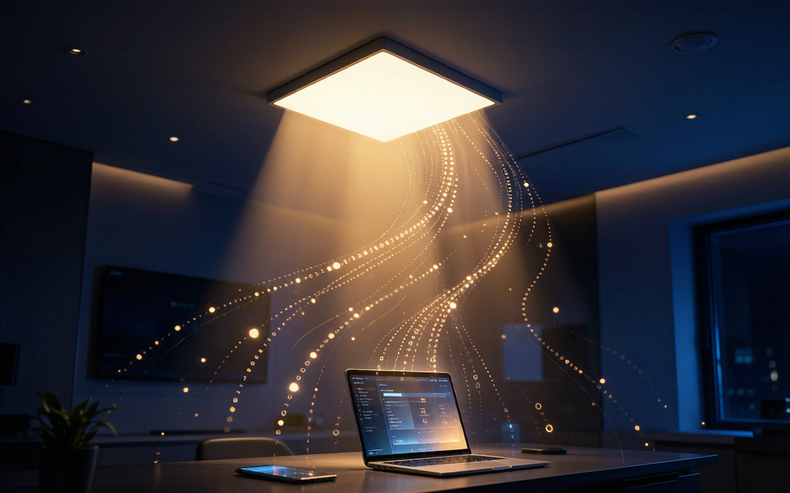
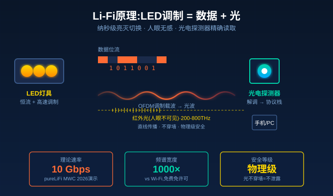
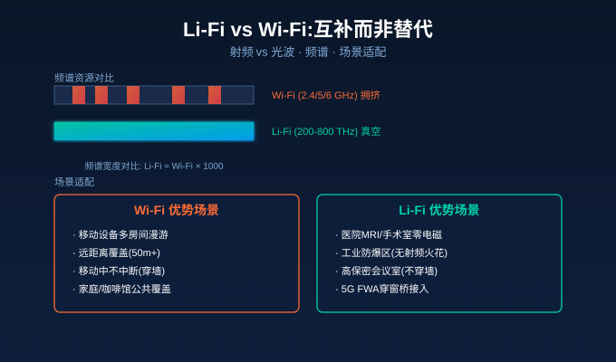

你有没有过这种时刻:视频会议开到一半,Wi-Fi突然卡顿;在地下车库扫码付费,信号转半天进不去;新装修的别墅,主卧卫生间总是信号死角——明明家里拉了千兆宽带,为什么到了某个角落就"消失"了?
2026年4月,一个被很多人忽略的新闻,实际上可能改变这一切:英国pureLiFi和中国台湾Askey(亚旭电脑)联合发布全球首款"一体化"Li-Fi 5G FWA穿窗桥接设备。紧接着MWC 2026上,pureLiFi又演示了10Gbps的光速互联网。这意味着——你家的LED灯具,正在从"照明工具"变成"通信基站"。
而作为LED驱动电源的厂商,我们正站在这个风口上。
2026年4月28日:Li-Fi商用化按下"启动键"
先看一个具体的事实。
2026年4月28日,英国爱丁堡的pureLiFi与中国台湾Askey正式签署战略合作,推出了全球首款集5G调制解调器与Li-Fi穿窗桥接技术于一体的FWA CPE设备——Bridge XC Flex。
它的工作原理很直白:
- 室外单元贴在窗户外面,接收5G或有线宽带信号
- 通过**红外光(人眼不可见)**将数据通过玻璃"打"到室内
- 室内单元接收后,既可以扩展出多个Li-Fi接入点,也可以接传统Wi-Fi路由器
整个安装过程不到5分钟,无需钻孔、无需布线、无需专业工程师上门。这家厂商给运营商算了一笔账:单个用户获取成本降低250美元,上门服务碳排放减少66公斤,5G网络容量释放6倍。
这不是PPT。演示和测试设备已于2026年上半年开始向全球电信运营商提供。
紧接着MWC 2026(2026年3月,巴塞罗那),pureLiFi更进一步,展示了下一代Light Antenna架构——理论速率10Gbps,并宣布已经在与一家大型美国互联网服务商做联合测试。同时,一家"知名智能手机厂商"已经把Light Antenna One模块塞进了一款旗舰机做内部测试。
趋势已经非常明确:Li-Fi从实验室概念,正式进入商用落地阶段。

Li-Fi到底是什么?和Wi-Fi本质区别在哪?
Li-Fi(Light Fidelity),全称"可见光通信",本质是用光波而不是无线电波来传数据。
它的物理基础很简单:LED的亮灭切换速度极快(纳秒级),人眼根本察觉不到,但光电探测器能精确读出"开"和"关"的二进制信号。把这种开关序列按协议编码,就成了高速数据流。
而Wi-Fi用的是2.4GHz/5GHz/6GHz的无线电波,传播特性是"绕射强、穿透强、干扰多"。
| 对比维度 | Wi-Fi(传统射频) | Li-Fi(可见光/红外光) |
|---|---|---|
| 频段 | 2.4/5/6 GHz(拥挤) | 200-800 THz(近真空,无许可) |
| 速率 | 家用Wi-Fi 6/7 1-5 Gbps | 理论10 Gbps,实测1-3 Gbps |
| 抗干扰 | 强,但同频干扰严重 | 天然零干扰(光不重叠) |
| 穿墙 | 强(2.4G),弱(5G) | 不穿墙(光直线传播) |
| 安全性 | 中(信号可被远距截获) | 极高(光不泄露到房间外) |
| 电磁兼容 | 忌讳医疗/航空场景 | 完全不干扰电磁敏感设备 |
| 部署成本 | 路由器+布线 | 复用LED灯具+简单光探测器 |
Li-Fi最关键的两个独特优势:
第一,频谱是"近真空"状态。全球无线电频谱资源被Wi-Fi/蓝牙/4G/5G/卫星/雷达等挤得水泄不通,2.4GHz和5GHz更是"公共厕所级"拥堵。而Li-Fi用的是200-800 THz的可见光和红外光频段,频谱宽度是Wi-Fi的1000倍以上,且完全免费、无需许可。
第二,天然物理级安全。光不能穿墙,所以你在A房间发的Li-Fi信号,绝对到不了B房间——这天然防窃听。同时医院核磁室、飞机客舱、加油站、工业防爆区这种"忌电磁"场景,Li-Fi是唯一可行的无线方案。
但Li-Fi的硬约束也写在物理定律里:光必须直线传播,中间不能遮挡。手挡住灯,信号就断。这是"为什么Li-Fi不会取代Wi-Fi,只会成为互补"的核心原因。

对LED驱动厂商:这不是"威胁",这是"升级"机会
很多LED驱动厂商第一反应是:"Li-Fi来了,我们的传统驱动电源会不会被淘汰?"
答案完全相反——Li-Fi对LED驱动厂商是千载难逢的产品升级机会。
要让LED灯具具备Li-Fi发射能力,LED驱动电源需要从"恒流源"升级为"高速调制恒流源"。具体说,驱动要在保持照明功能的同时,叠加一层高速调制信号(通常用OFDM或DCO-OFDM调制)。
这对驱动提出了三个新要求:
要求一:调制带宽足够宽。Li-Fi需要LED在通断之间切换频率达到几十MHz到几百MHz(相比传统PWM调光的几kHz,快了10000倍)。普通驱动电源的输出级电路和滤波电容会严重衰减高频信号,必须重新设计输出级拓扑,采用GaN器件、减小输出电容、降低寄生电感。
要求二:亮度恒定,调制不可见。Li-Fi调制叠加在照明电流上,人眼绝不能看出灯光在"闪烁"——这要求驱动具备超高调制深度(>90%)同时保持亮度恒定的技术。简单说,在"暗下去"的那一瞬间,人眼完全无感,但光电探测器能清晰读出信号。
要求三:协议栈集成。未来Li-Fi驱动不是"傻瓜恒流源",而是要集成IEEE 802.11bb标准协议栈——这是2023年IEEE正式发布的Li-Fi通信标准。驱动芯片里要带PHY层、MAC层、信道均衡算法。这需要驱动厂商与Li-Fi芯片厂商(比如pureLiFi的Light Antenna One模组)深度合作,把两者做成"一颗芯片"或"高集成模组"。
换句话说:未来的LED驱动电源,不再是"电源",而是"光通信模组"。
这就像当年手机行业——4G时代手机SoC只需要基带+应用处理器;5G时代SoC要集成AI加速、ISP、5G modem;Li-Fi时代的LED驱动,要集成恒流源+高速调制+802.11bb协议栈。
谁先把这块技术打通,谁就能吃下未来5-10年的"光通信基础设施"红利。
谁已经在用?三个真实落地场景
**场景1:5G FWA最后一公里。**这是Askey+pureLiFi Bridge XC Flex的看家本领。运营商把5G信号铺到小区楼顶,但5G毫米波穿墙能力差,室内经常没信号。Bridge XC Flex贴在窗户外面接收5G,室内用Li-Fi扩展覆盖——用户自己5分钟装好,运营商省下250美元/户的上门成本。
**场景2:医院核磁室、手术室。**MRI扫描间禁止任何射频无线设备(会干扰磁场),但医护人员又需要实时调取患者影像、与外界通信——Li-Fi是唯一合规的无线通信方案。欧洲已有多个医院在手术室顶部集成Li-Fi LED灯具。
**场景3:工业防爆区、航空航天。**加油站、化工厂、矿井下,任何电火花都可能引发爆炸。射频天线本身就是隐患,Wi-Fi是禁止使用的。Li-Fi用纯光传输,完全无电磁辐射,是这类场景唯一可行的无线接入方案。
**场景4:金融/政府高保密办公。**VIP会议室、涉密办公区,Wi-Fi信号可被隔壁楼层通过定向天线截获(虽然复杂但可行),Li-Fi天然不泄露到房间外——某国国防部和几家欧美投行已经在内部署。
2026年下半年到2027年:3个关键时间节点
**节点1:2026年下半年,运营商试点铺开。**Askey+pureLiFi的Bridge XC Flex已经向全球电信运营商提供演示设备,预计Q3-Q4将进入大规模试点。如果试点数据达标,2027年开始正式商用招标。
**节点2:2027年,首款"内置Li-Fi的旗舰手机"有望发布。**pureLiFi已经和"某知名智能手机厂商"在做内部测试。Light Antenna One模块体积已经做到足够小,可以塞进手机顶部边框。这意味着消费者手里的设备,正在悄悄获得"光通信"能力。
**节点3:2027-2028年,LED灯具批量集成Li-Fi。**随着IEEE 802.11bb标准成熟,LED驱动芯片厂商(昕诺飞、欧普、雷士、包括NEXLAMP这类专业驱动厂商)将与Li-Fi芯片厂商深度合作,推出"开箱即用"的Li-Fi LED灯具模块。首批落地场景:会议室、医院、高端住宅。
给LED驱动厂商的3条落地建议
**建议1:现在开始评估产品路线图。**传统LED驱动厂商要尽快评估:**自家现有产品平台,能否在不重构的前提下,升级支持高速调制?**如果不能,需要在下一代产品研发中预留"高速调制接口"——比如在输出级增加调制信号注入端。
**建议2:关注GaN和SiC器件。**高频调制对硅基MOSFET来说已经接近极限。GaN(氮化镓)和SiC(碳化硅)器件的开关速度是硅基的5-10倍,寄生参数小一个数量级,是Li-Fi驱动的核心器件。2026年GaN/SiC成本已经下降30-40%,不再是"实验室玩具"。
**建议3:与Li-Fi芯片厂商建立早期合作。**pureLiFi的Light Antenna One、Signify的Trulifi、Velmenni的LiFi系统,都是潜在的合作伙伴。越早建立接口规范,越早在标准制定阶段有话语权,未来在产品认证、专利布局上才有主动权。
结语:灯的第二次革命
第一次革命是白炽灯→LED灯——把"照明"从模拟时代带入数字时代。
第二次革命是LED灯→智能灯——把"开关"从机械时代带入IoT时代。
第三次革命,正在发生的,是LED灯→光通信节点——把"灯"从单纯的"照明终端"升级为"信息基础设施"。
10Gbps的速率,零干扰的频谱,物理级的安全,天然复用的LED基础设施——Li-Fi不是Wi-Fi的替代品,而是下一代通信基础设施的关键拼图。
对LED驱动电源厂商来说,风口已经来了:你家的灯,正在悄悄变成宽带接入点。是当看客,还是当玩家,选择权在今天。
NEXLAMP — 智能照明驱动电源专家 涂鸦Zigbee智能照明 + 全协议调光驱动(TRIAC / 0-10V / DALI / Zigbee) 刘先生 +86 13825496855 | www.nexlamp.com